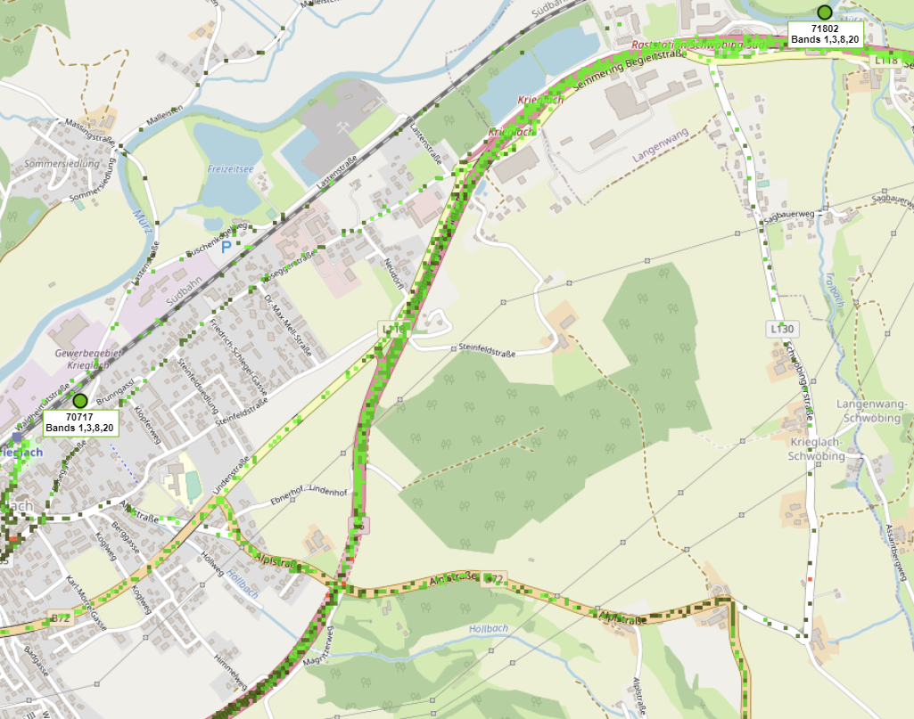

Guten Tag,
würde mich interessieren ob Mittlerweile tatsächlich 5G mit 500MBIt an meinem Standort funktioniert (bisher war es zwar laut map möglich aber in der Praxis lag der speed vor einem Jahr bei nicht mal 80Mbit)
DANKE
lg
AL
Hey
@AL15
Der Sendemast am Lagerhaus, welcher dich versorgt ist mit 4G Band 20 + 8 + 3 + 1 (cellmapper) und 5G n78 ausgestattet (
Versorgungsdaten
).
Je nachdem wann du Magenta letztes Jahr getestet hast, sind ist Band 8 4G vielleicht noch nicht verfügbar gewesen.
Allerdings hat das Band 8 mit 5MHz nur eine recht kleine Kanalbreite (20 MHz sind das maximum für 4G, B20 + B3 + B1 sind zusammen 45 MHz) und trägt damit nicht sonderlich viel zusätzliche Kapazität bei (48,95 Mbit/s mit 256QAM). Und n78 hat mit 100 MHz hat sowieso viel Kapazität, wobei entweder passive Antennen mit je acht Empfangs- und Sendeantennen oder aktive massive MiMo Antennen mit bis zu je 64 Empfangs- und Sendeantennen eingesetzt werden.

Außerdem mit welchem Router hast du letztes Jahr getestet?
Solltest du es noch nicht mit dem Outdoor-Router von Magenta versucht haben, dann wäre es einen versuch Wert.
Der Vorteil von einem Outdoor-Router ist, dass alle Antennen draußen platziert werden und dadurch die Dämpfung des Gebäudes wegfällt.
Das Beste wäre es, Magenta 5G vor Ort erneut auszuprobieren.
LG NTM
Hallo,
Danke für die rasche Antwort - habe mir gerade von nen.freund eine Magenta 5g sim.geborgt - leider kommt bei dem Sender der RTR speedtest auf max 100mbit direkt am Sender - wenn ich Richtung OMV fahre gibt dort tatsächlich über 500mbit kann es sein das bei dem Sender am Lagerhaus was noch nicht passt bzw der so ausgelastet ist das da nicht mehr geht?
Sehr ich optisch welche Antennen eingesetzt sing?
Danke LG AL
vor 18 Stunden schrieb NTM:Hey @AL15
Der Sendemast am Lagerhaus, welcher dich versorgt ist mit 4G Band 20 + 8 + 3 + 1 (cellmapper) und 5G n78 ausgestattet ( Versorgungsdaten ).Je nachdem wann du Magenta letztes Jahr getestet hast, sind ist Band 8 4G vielleicht noch nicht verfügbar gewesen.
Allerdings hat das Band 8 mit 5MHz nur eine recht kleine Kanalbreite (20 MHz sind das maximum für 4G, B20 + B3 + B1 sind zusammen 45 MHz) und trägt damit nicht sonderlich viel zusätzliche Kapazität bei (48,95 Mbit/s mit 256QAM). Und n78 hat mit 100 MHz hat sowieso viel Kapazität, wobei entweder passive Antennen mit je acht Empfangs- und Sendeantennen oder aktive massive MiMo Antennen mit bis zu je 64 Empfangs- und Sendeantennen eingesetzt werden.
Außerdem mit welchem Router hast du letztes Jahr getestet?
Solltest du es noch nicht mit dem Outdoor-Router von Magenta versucht haben, dann wäre es einen versuch Wert.Der Vorteil von einem Outdoor-Router ist, dass alle Antennen draußen platziert werden und dadurch die Dämpfung des Gebäudes wegfällt.
Das Beste wäre es, Magenta 5G vor Ort erneut auszuprobieren.
LG NTM
Kann man auch irgendwie die 700 Mhz Abdeckung herausfinden? Gibt es da eine Möglichkeit dafür?
Am 18.12.2022 um 10:01 schrieb AL15:Hallo,
Danke für die rasche Antwort - habe mir gerade von nen.freund eine Magenta 5g sim.geborgt - leider kommt bei dem Sender der RTR speedtest auf max 100mbit direkt am Sender - wenn ich Richtung OMV fahre gibt dort tatsächlich über 500mbit kann es sein das bei dem Sender am Lagerhaus was noch nicht passt bzw der so ausgelastet ist das da nicht mehr geht?
Sehr ich optisch welche Antennen eingesetzt sing?
Danke LG AL
Es gibt nahe der OMV auch einen anderen Sendemast mit derselben 4G/5G Konfiguration.
Auslastung kann evtl. der Support nachsieht.
Mit einer Kamera mit entsprechend gutem Zoom-Objektiv, um Details an der Antenne zu erkennen, kann recherchiert werden um was für eine Antenne es sich handelt. Passive Antennen bekommen das Analoge Signal über zwei Kabel. Aktive Antennen haben eine digitale Datenanbindung und eine Stromversorgung.
vor 16 Stunden schrieb Julian S.:Kann man auch irgendwie die 700 Mhz Abdeckung herausfinden? Gibt es da eine Möglichkeit dafür?
Leider nicht. Es müssen nur Daten für n78 getrennt veröffentlicht werden. Ohne 5G SA gibt es auch keine Möglichkeit die 5G Daten mit cellmapper zu erfassen. Dafür im Umkehrschluss, wenn es kein n78 gibt wird es entweder n1 DSS 5G oder n28 5G sein.
vor 17 Stunden schrieb NTM:Es gibt nahe der OMV auch einen anderen Sendemast mit derselben 4G/5G Konfiguration.
Auslastung kann evtl. der Support nachsieht.
Mit einer Kamera mit entsprechend gutem Zoom-Objektiv, um Details an der Antenne zu erkennen, kann recherchiert werden um was für eine Antenne es sich handelt. Passive Antennen bekommen das Analoge Signal über zwei Kabel. Aktive Antennen haben eine digitale Datenanbindung und eine Stromversorgung.
Leider nicht. Es müssen nur Daten für n78 getrennt veröffentlicht werden. Ohne 5G SA gibt es auch keine Möglichkeit die 5G Daten mit cellmapper zu erfassen. Dafür im Umkehrschluss, wenn es kein n78 gibt wird es entweder n1 DSS 5G oder n28 5G sein.
Und wann startet Magenta 5G SA?
{kind=link}